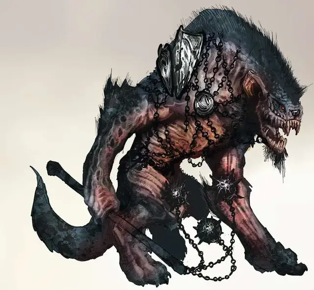

Йеногу
Yeenoghu
Огромное Исчадие (Демон), хаотично-злое, именной НИП

Класс Доспеха 20 (природный доспех)
Хиты 333 (23к12 + 184)
Скорость 50 футов
| мод | спас | ||
|---|---|---|---|
| СИЛ | 29 | +9 | +9 |
| ЛОВ | 16 | +3 | +10 |
| ТЕЛ | 23 | +6 | +15 |
| мод | спас | ||
|---|---|---|---|
| ИНТ | 15 | +2 | +2 |
| МДР | 24 | +7 | +14 |
| ХАР | 15 | +2 | +2 |
Навыки Восприятие +14, Запугивание +9
Сопротивление урону огонь, холод, электричество
Иммунитет к урону яд; немагический дробящий, колющий, рубящий
Иммунитет к состояниям отравление, очарование, испуг, истощение
Чувства истинное зрение 120 футов, пассивное Восприятие 24
Языки Все, Телепатия 120 фт.
Опасность 24 (62000 опыта)
Бонус мастерства +7
Особенности
Легендарное сопротивление (3/день). Если Йеногу проваливает спасбросок, он может вместо этого сделать спасбросок успешным.
Сопротивление магии. Йеногу совершает с преимуществом спасброски от заклинаний и прочих магических эффектов.
Культ Йеногу. Йеногу дарует своим прислужникам особые способности. Его самые преданные последователи получают опциональное действие «Острые челюсти» и способность «Буйство», а лидеры культа – способность «Аура кровожадности».
Острые челюсти. Рукопашная атака оружием: бонус к попаданию равен сумме бонуса мастерства существа и модификатора его Силы, досягаемость 5 фт., одна цель. Попадание: 1к4 колющего урона + модификатор Силы существа.
Буйство. Когда это существо в свой ход снижает рукопашной атакой хиты другого существа до 0, оно может бонусным действием переместиться на расстояние до половины своей скорости и совершить одну атаку Острыми челюстями.
Аура кровожадности. Если это существо дееспособно, то любое существо со способностью «Буйство» в пределах 10 футов от него бонусным действием может совершить атаку Острыми челюстями.
Действия
Мультиатака. Йеногу совершает три атаки Цепом.
Цеп. . Рукопашная атака оружием: +16 к попаданию, досягаемость 15 фт., одна цель. Попадание: 22 (2к12 + 9) урона силовым полем. В свой ход Йеногу может вызвать один из дополнительных эффектов, каждый из которых он может применить только один раз за ход:
• Силовое поле. Атака дополнительно наносит 13 (2к12) урона силовым полем.
• Паралич. Цель должна совершить спасбросок Телосложения Сл 17, иначе станет парализованой до начала следующего хода Йеногу.
• Смятение. Цель должна преуспеть в спасброске Мудрости Сл 17, иначе станет жертвой эффекта заклинания смятение [confusion] до начала следующего хода Йеногу.
Укус. Рукопашная атака оружием: +16 к попаданию, досягаемость 10 фт., одна цель. Попадание: 20 (2к10 + 9) урона кислотой.
Использование заклинаний. Йеногу накладывает одно из следующих заклинаний, используя Харизму в качестве базовой характеристики и без использования материальных компонентов (Сл спасброска от заклинаний 17):
• Неограниченно: обнаружение магии [detect magic];
• 3/день каждое: рассеивание магии [dispel magic], ужас [fear], невидимость [invisibility];
• 1/день: телепортация [teleport].
Бонусные действия
Буйство. Когда Йеногу опускает хиты существа до 0 рукопашной атакой в своем ходу, Йеногу может переместиться на половину своей скорости и совершить атаку Укусом.
Легендарные действия
Йеногу может совершить 3 легендарных действия на выбор из перечисленных ниже вариантов. Лишь одно легендарное действие может быть совершено за один раз, и только в конце хода другого существа. Йеногу восстанавливает истраченные действия в начале своего хода.
Рывок. Йеногу перемещается на свою скорость.
Удар наотмашь. Йеногу совершает атаку Цепом. Если атака успешна, цель должна преуспеть в спасброске Силы Сл 24, иначе будет отброшена на 15 футов по прямой линии от Йеногу. Если спасбросок провален на 5 или более, цель падает ничком.
Дикость (стоит 2 действия). Йеногу совершает атаку Укусом против каждого существа, находящегося на расстоянии 10 футов от него.
Логово
Логово Йеногу в Бездне известно под названием Долина Смерти [Death Dells], бесплодные холмы и лощины которой служат ему охотничьими угодьями, в которых он преследует смертных жертв его жестокой игры. Логово Йеногу – это кровавая обитель смерти, кишащая гноллами, гиенами и упырями, и на этом слое Бездны почти нет строений или каких-либо при- знаков цивилизации.
Действия логова
При значении инициативы «20» (при равной инициативе персонаж совершает действие прежде действия логова), Йеногу может совершить действие в логове, чтобы создать один из следующих магических эффектов; он не может использовать один и тот же эффект два раунда подряд:
• Железный шип. Йеногу заставляет железный шип – 5 футов в длину и 1 дюйм в диаметре – вырваться из земли в точке, которую он может видеть, и которая находится не дальше 100 футов от него. Любое существо, находящееся в пространстве, где появляется шип, должно совершить спасбросок Ловкости Сл 24. При провале существо получает 27 (6к8) колющего урона и становится опутанным, будучи насаженным на шип. Существо может потратить действие на то, чтобы слезть (или снять кого-либо) с шипа, оканчивая тем самым состояние.
• Стайный рывок. Каждый гнолл или гиена, которых Йеногу может видеть, могут потратить реакцию, чтобы переместиться на свою скорость.
• Подстрекание стаи. До следующего счета инициативы «20» все гноллы и гиены, находящиеся в логове, входят в состояние ярости, получая преимущество на броски атаки рукопашным оружием, но броски атаки по ним также совершаются с преимуществом.
Местные эффекты
Область, в которой расположено логово Йеногу пронизана его магией, создающей в ней один или более из следующих эффектов:
• Колючая местность. В пределах 1 мили от логова из земли и камней торчат железные шипы. Йеногу насаживает своих убитых жертв на них.
• Свирепые хищники. Хищные звери в пределах 6 миль от логова необычайно дикие, и убивают гораздо больше, чем им нужно для пропитания. Тела их жертв остаются гнить, образуя неестественный пейзаж бессмысленной бойни.
Если Йеногу умирает, эти эффекты прекращаются в течение 1к10 дней.
Описание
Зверь Мясник представляет собой огромного покрытого боевыми шрамами гнолла высотой в 14 футов. Йеногу – Лорд Гноллов, а его создания выглядят как его извращенные подобия. Когда лорд демонов охотится в Материальном Плане, стаи гиен следуют за ним по пятам. Те из них, что съедают жертв Йеногу, становятся гноллами, следующими принципам своего повелителя. Есть также те, кто поклоняется Зверю Мяснику, и они, как правило, заимствуют внешность и повадки гноллов – ходят, сгорбившись и стачивают свои зубы, чтобы сделать их заостренными.
Йеногу не интересует ничего кроме бойни и бессмысленного разрушения. Для него гноллы лишь пешки, которых он посылает творить жесточайшие зверства в свою честь. Йеногу получает удовольствие, когда вызывает в жертвах страх перед тем, как их убить, и сеет скорбь и отчаяние, уничтожая то, что им дорого больше всего. Он не ведет переговоров. Встретившись с ним, можно лишь сразиться с ним, за исключением тех случаев, когда ему скучно. У Зверя Мясника давняя вражда с Бафометом, Рогатым Королем, и два этих лорда демонов, а также их последователи, нападают друг на друга лишь завидев.
Лорд Гноллов облачен в грязные меха и облезлые шкуры, а его лицо подобно черепу скалящегося хищника. Лоскутные доспехи изготовлены из старых щитов и нагрудников, закрепленных на его теле тяжелыми цепями, украшенными шкурами, содранными с его врагов. Он носит трехглавый цеп по имени Мясник, который он может вызывать в свои руки по своему желанию, хотя с такой же вероятностью он разорвет свою добычу зубами.